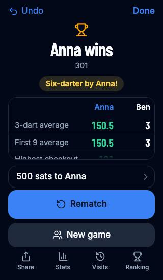
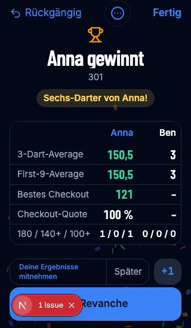
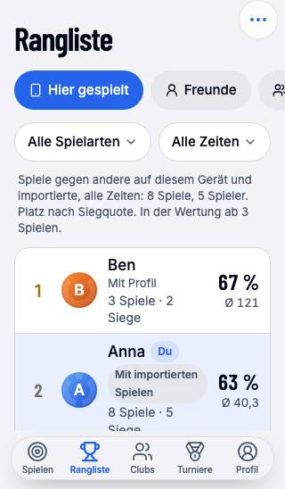
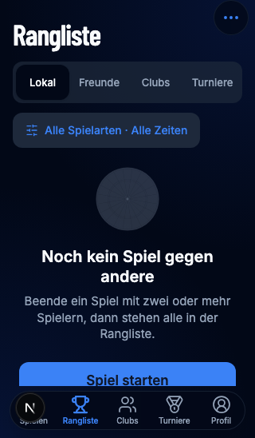
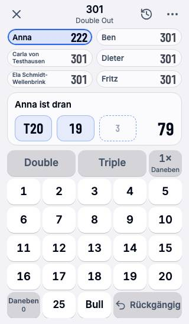
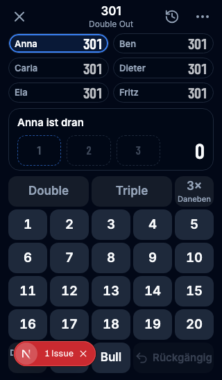
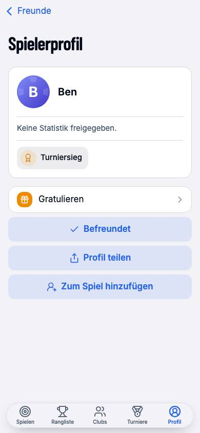
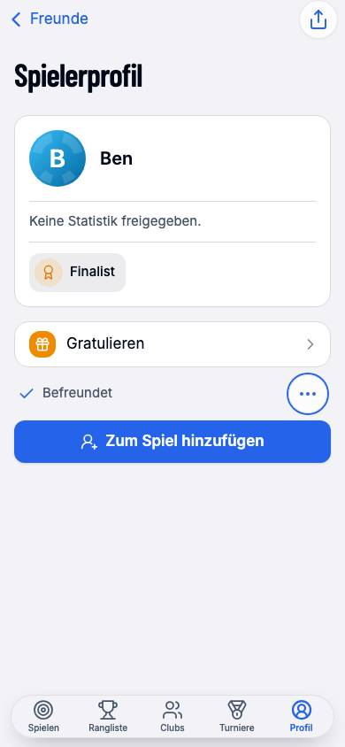

01 · Result on a small phone
Rematch and new game share one row; secondary actions move to a menu, giving the statistics more room.


Before-and-after evidence, an adversarial review, and the remaining plan for the 15 reported issues.
The branch gives the result statistics more room, makes leaderboard sections visible, reduces repeated club empty states, and improves several smaller screens. This is a review of the current branch and a plan for the remaining work.
Full unit suite, plus type checking and lint, passed. The production darts evening passed 126/126 checks before two small final display refinements.
320 × 548, 568 × 320, and 768 × 1024 in Chromium. Coverage differs by screen.
German and English: keyboard navigation and applying the leaderboard filters.
These are real browser captures. Sample data, theme and language are identified below each pair; compare the layout and hierarchy, not the numerical results.








Additional captures: landscape result, landscape game, landscape filter, Cricket name collisions, Clock name collisions.
“Implemented” describes code present on the branch, not a guarantee of complete device or interaction coverage.
| Issue | Current branch | Status | Next decision or check |
|---|---|---|---|
| 1 · Result | Rematch and new game stay visible together; less frequent actions are in a menu. | Implemented | Verify tournament, stake and award combinations; inspect menu contrast after animation. |
| 2 · Rangliste header | Visible segments, one filter sheet, explanation below rows. | Partial | Review populated rows, large text and localized labels. |
| 3 · Rows / duplicate player | Import markers have a legend; guest and profile can be linked explicitly on this device. | Partial | Verify device-local links with real profiles and confirm backup / sync expectations. |
| 4 · Six players | Short distinct labels on crowded boards; accessible labels retain full names. | Partial | Collision and long-name fixtures checked at phone and landscape sizes in X01, Cricket and Clock. |
| 5 · Club | Empty sections grouped; pull gesture and explicit refresh available. | Partial | Real touch, offline, errors, scrolling and nested interaction checks. |
| 6 · Finished tournament | Compact result card; “Leiten” is plain text. | Needs review | Capture organizer, player and award states on SE and landscape. |
| 7 · Explanations | Some profile and club copy shortened; leaderboard context moved. | Partial | Review visibility, history, setup, payment and discovery copy together. |
| 8 · Empty states | Recent-player empty messages are plain muted text. | Needs review | Verify both sheets with no candidates and with a populated list. |
| 9 · Other profile | Add to game is prominent; sharing is in the bar and friendship state is quieter. | Needs review | Verify friendship states, sharing and both request actions on device. |
| 10 · Setup | Rules text moved below players into the rules group. | Partial | Verify the lighter, directly visible add, scan and saved-round actions. |
| 11 · Own profile | The caption keeps the game scope and removes the routine device phrase. | Needs review | Verify imported and cross-device figures remain clearly identified. |
| 12 · Payment card | Fresh exchange-rate timestamp hidden; old rate and stale balance remain distinct. | Needs review | Check fresh, stale, unavailable and offline states. |
| 13 · Tournament progress | Current phase and “Step X of 5” replace tiny labels. | Needs review | Verify paused, finished and translated states. |
| 14 · Clubs / tournaments | Labeled scan action and create button remain visible. | Needs review | Verify create and scan on populated and empty states. |
| 15 · Tablet | Game-choice cards receive more height on tablet. | Needs review | Check portrait and landscape; decide whether recent games add useful value. |
The red team asks how the interface or data can fail. The blue team proposes or applies a response. This is one code-and-browser review, not a claim of independent external testers or real-device certification.
Red: automatically combining “Ben” can corrupt rankings, head-to-head figures and history, especially if both records occur in one game. Blue: an explicit, reversible association combines display statistics on this device without rewriting games. Same-game conflicts are rejected; associations suspend if later evidence conflicts. Status: synthetic browser link-and-undo and storage tests pass; broader device review remains.
Red: duplicate first names and long single words can wrap or clip in a short tile; Cricket and Clock use different layouts. Blue: short labels distinguish collisions and full names remain accessible. Status: X01, Cricket and Clock collision and long-name fixtures were checked at 320 and 568 px.
Red: nested content, a second finger, offline operation or gesture cancellation may cause surprising results. Blue: only start at the top, use distance and direction thresholds, keep the explicit refresh control, and verify on real touch hardware. Status: implemented; touch and error cases unverified.
Red: an asterisk may be ambiguous or its legend may be off screen. Blue: provide a legend and full accessible label; verify a populated list and the player detail, with screen reader and larger text. Status: implemented; populated and assistive-technology review open.
Red: replacing scrolling pills removed arrow-key behavior. Blue: added arrow navigation and a single tab stop. Evidence: selection and focus moved correctly at 320, 568 and 768 px in German and English.
Red: a short landscape sheet may place its second filter below the fold; menus also add a tap. Blue: the filter body scrolls with Done pinned, while the chosen values remain visible. Evidence: Cricket and Today were selected and retained at all three sizes in both languages. Check larger text and screen readers.
Red: the evening script can break when control labels and interactions change. Blue: the leaderboard filter steps were updated; run the complete darts evening with relays. Status: open; unit tests do not substitute for this run.
Red: one timestamp can mislead when a fresh rate is paired with a stale balance. Blue: show an old-rate timestamp and retain the balance timestamp on refresh failure; exercise offline and old-data states. Status: code changed; wallet-state interaction review open.
The sequence keeps the game usable at each step and reserves identity changes for a separately reviewable commit.
Capture a populated leaderboard in both themes and languages; verify import markers, statistics, menus, long labels and extension actions at SE, landscape and tablet sizes. Fix any clipping before proceeding.
Check the implemented disambiguated labels with real devices, larger text and screen readers.
Verify the explicit, reversible local association with real profiles; associations are device-local and are not synchronized or carried in a backup. Confirm that later identity conflicts suspend the association and that separate people remain separate.
Test refresh gestures, explicit refresh, stale and offline states, and empty-state creation paths. Capture finished-tournament participant, organizer and award states; review progress in both languages.
Verify profile actions across relationship states; refine setup entry choices while preserving saved rounds; shorten explanations without removing privacy or statistics context. Review wallet age labels and tablet layout.
The updated darts evening passed 126/126 checks with local relays, and the full suite passed 728 tests. Complete screen-reader checks and real iPhone / iPad touch checks. Commit fixes and screenshots per issue; refresh this page with matched before-and-after fixtures.
DartConnect documents quick rematches, score correction and access to game statistics; the branch keeps these core actions accessible.
Evidence is from local Chromium, not a real iPhone or iPad. Screenshots include a development overlay in some captures. The current review does not cover every state, language, theme or screen reader.